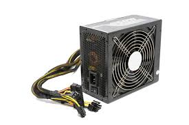
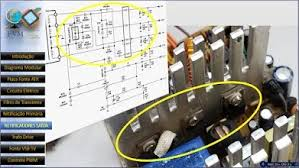
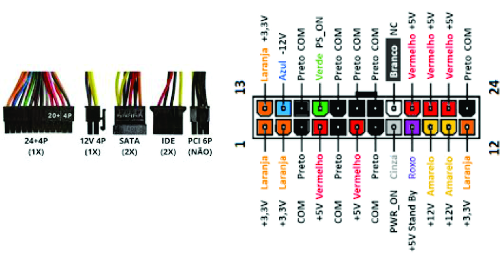
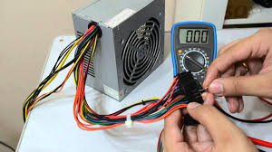
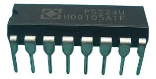
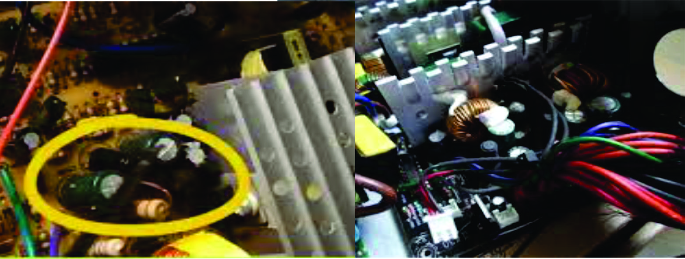
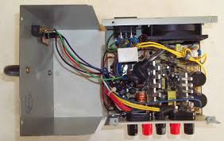
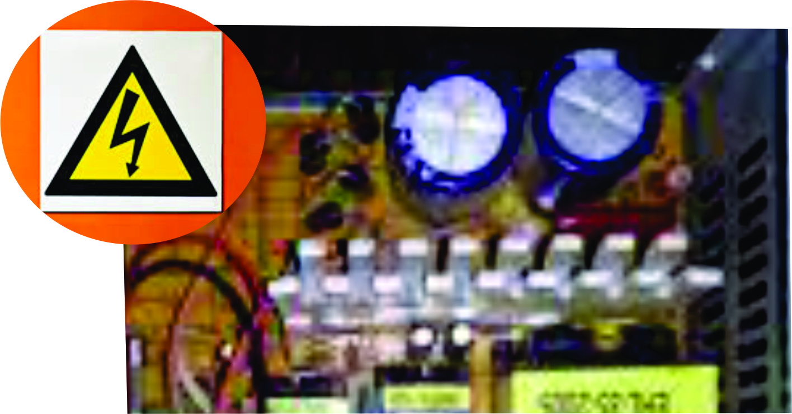
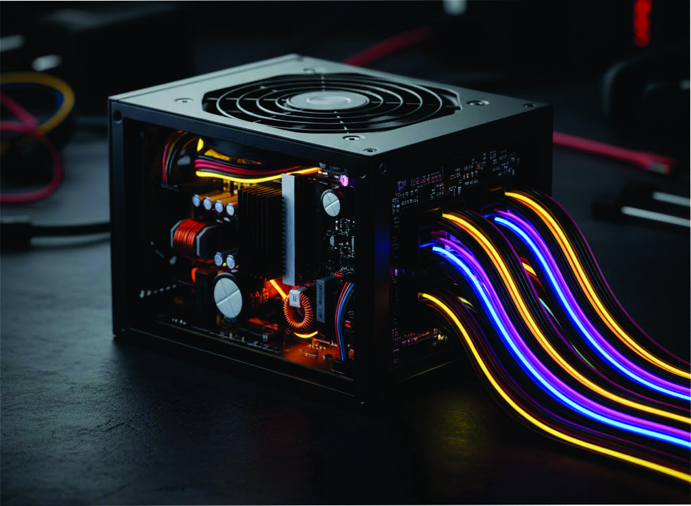

Fonte ATX
A fonte ATX é responsável por converter a energia elétrica da rede (110V ou 220V AC)
em tensões contínuas (DC) utilizadas pelos componentes do computador. Ela fornece energia
estável e segura para a placa-mãe, processador, memórias, discos e periféricos.

Estrutura da Fonte ATX
A fonte ATX é dividida em duas regiões principais:
Primária: Trabalha com alta tensão (110/220V AC), contendo fusível, NTC,
ponte retificadora e capacitores.
Secundária: Gera as saídas DC (+3.3V, +5V, +12V), filtradas por diodos
rápidos e capacitores.
Entre elas há o transformador principal e o circuito PWM
de controle.

Conector ATX 24 Pinos
O conector principal da fonte possui fios coloridos, cada um com uma tensão específica:
Amarelo: +12V – CPU, ventoinhas e HDs.
Vermelho: +5V – Circuitos lógicos.
Laranja: +3.3V – Chipset e memória.
Preto: GND (terra).
Verde: PS-ON (ativa a fonte).
Roxo: +5VSB (standby).
Cinza: Power Good (sinal de estabilidade).

Testando a Fonte ATX
Para testar uma fonte ATX:
1️⃣ Faça o curto entre o fio verde (PS-ON) e um fio preto
(GND) – isso liga a fonte.
2️⃣ Meça as tensões com o multímetro:
• +12V (fio amarelo)
• +5V (fio vermelho)
• +3.3V (fio laranja)
3️⃣ O fio roxo (+5VSB) deve ter tensão mesmo com a fonte desligada.

Circuito de Controle e Feedback
O circuito PWM controla a chaveamento dos transistores, ajustando a energia
enviada
ao transformador. O optoacoplador envia informações da parte secundária para o
controlador, mantendo as tensões estáveis e protegendo o sistema contra sobrecarga.

Principais Defeitos na Parte Primária
⚡ Fusível queimado: Indica curto na entrada ou nos transistores de
chaveamento.
💡 Diodos da retificação abertos ou em curto: Impedem a conversão correta de AC
para DC.
🔋 Capacitor principal estufado: Provoca instabilidade na tensão de 300V
DC.
🔥 Transistor de chaveamento queimado: Causa curto direto, geralmente
acompanhado de fusível rompido.
💥 NTC aberto: A fonte não parte, pois o circuito de partida fica
interrompido.
⚙️ Ponte retificadora com fuga: A tensão na primária cai e o PWM não
oscila.
🧩 CI PWM queimado: A fonte não inicia nem gera o sinal de chaveamento.

Principais Defeitos na Parte secudaria
💥 Fonte liga e desliga: Capacitores secos ou circuito de feedback
defeituoso.
⚡ Sem 5VSB: Falha no circuito standby.
🔌 Sem 12V: MOSFETs ou diodos de saída queimados.
🔊 Ruído alto: Falta de filtragem ou capacitor principal com ESR alto.

Prática: Identificação de Componentes
Utilize fontes sucata e identifique:
• Fusível e NTC (proteção de entrada)
• Ponte retificadora e capacitores
• Transformador e diodos de saída
• Circuito PWM e optoacoplador
• Cooler e sensor térmico

Segurança ao Trabalhar com Fontes
⚠️ A região primária da fonte contém tensões perigosas acima de 300V.
Descarregue os capacitores antes de tocar na placa.
Evite medir a primária energizada.
Use luvas e ferramentas isoladas.

Conclusão
A fonte ATX é essencial para o funcionamento do computador.
Nesta aula, aprendemos sobre suas partes, como testar tensões e identificar defeitos.
Essa base será importante para entender o papel da fonte na alimentação da placa-mãe
e demais componentes.